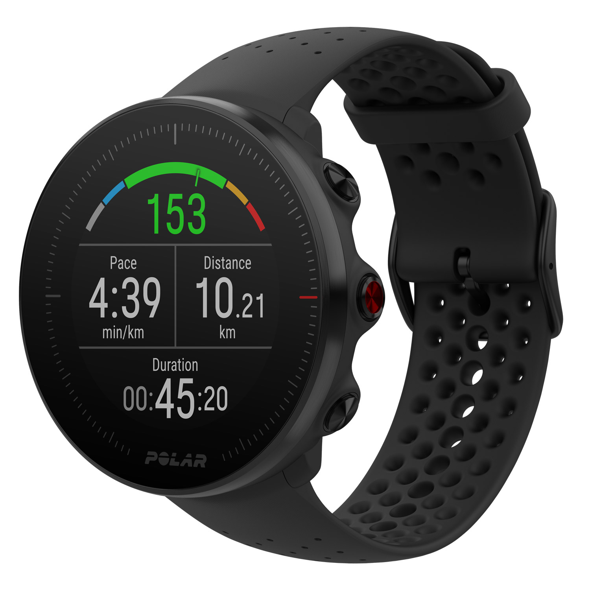
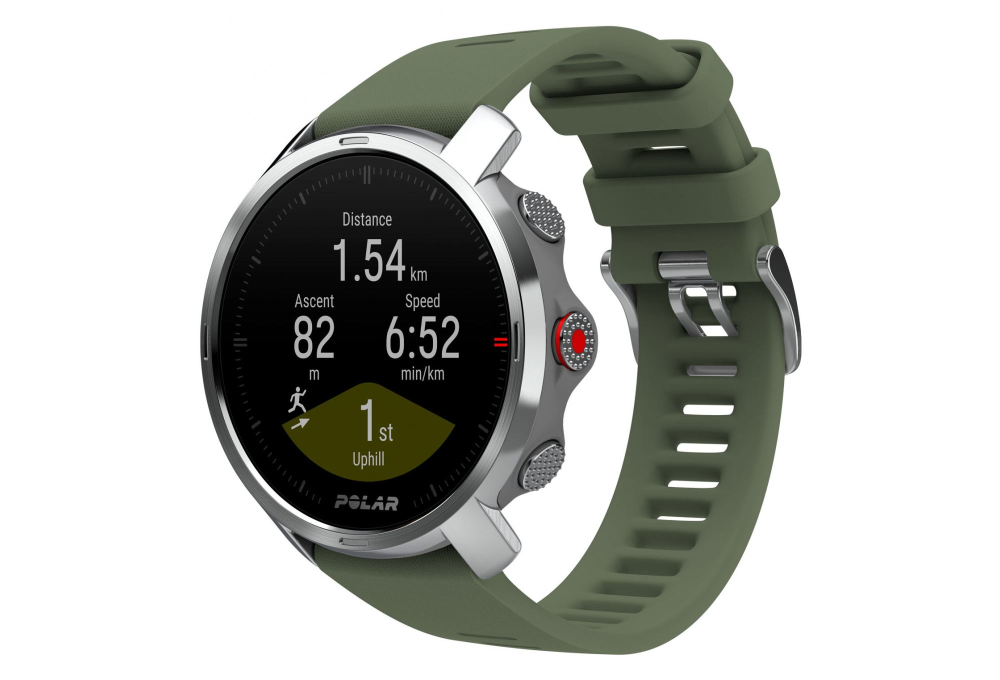

advanced running & multi-sport watch with gps and wrist-based heart rate
Do you like setting records? Challenge yourself with Polar Vantage M, the new all-around GPS watch for running and multisport. This thin and light training partner gives you all the data you need to improve your performance.
outdoor sports watch with gps and all essential training features
The Polar Grit X outdoor watch is the perfect blend of tough, durable yet lightweight design, top-of-the-line exercise features, and Polar Flow, the ideal workout tracking platform. Polar Grit X features built-in GPS, compass and altimeter in training mode, and unique Polar Smart Coaching features to help you prepare for new routes.
